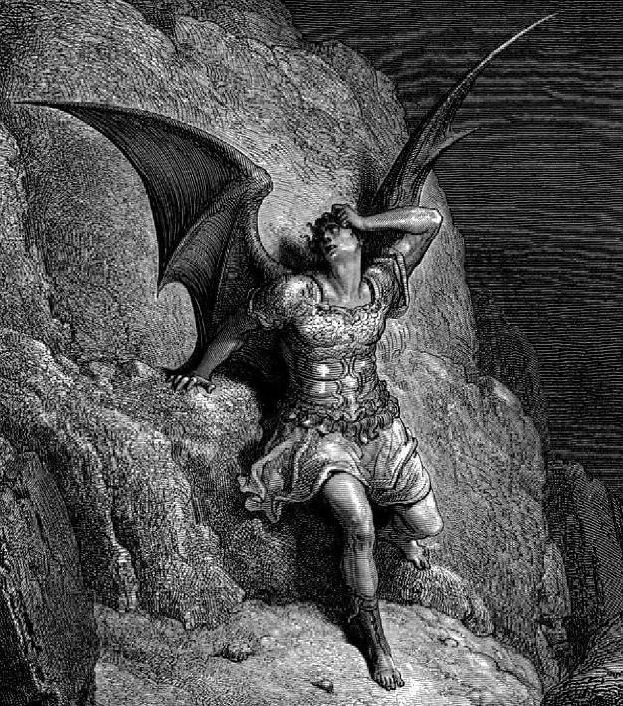

¿Qué ocurre cuando dejamos de reconocernos en la imagen que hemos construido?
01Narciso
Lo que nunca pudo ver.
Una imagen puede parecernos tan completa que dejemos de escuchar todo lo que queda fuera.
Narciso ante el agua.
El relato.
En el libro III de las Metamorfosis, Ovidio presenta a Narciso como un joven que rechaza a quienes se acercan a él, entre ellos Eco. Al inclinarse sobre una fuente, se enamora de la figura que aparece en el agua. Intenta alcanzar a alguien que no puede separarse de sus propios movimientos.
Finalmente reconoce que la imagen es la suya. Ese reconocimiento no lo libera: sabe quién lo atrae, pero no consigue apartarse. Se consume junto al agua. Cuando las ninfas buscan su cuerpo, encuentran una flor. El relato no termina con un Narciso reconciliado consigo mismo.
El desenlace. La identificación del reflejo llega; la salida de su fascinación, no. La muerte y la flor cierran la versión de Ovidio.
UNA LECTURA CONTEMPORÁNEA
Reconocerse no es conocerse.
Nuestra lectura comienza en esa diferencia. Podemos reconocer una fotografía, un perfil o una reputación y, aun así, desconocer las necesidades que les hemos entregado. El problema no es querer gustarnos. Es convertir una representación parcial en la única forma aceptable de existir.
La idealización también puede proteger una inseguridad: si la imagen permanece intacta, parece que nada podrá contradecirnos. Pero esa protección exige vigilancia constante y deja poco espacio para el encuentro. Otra persona no devuelve siempre lo que deseamos ver; tiene una voz propia. Eco importa porque recuerda esa relación que Narciso no sabe sostener.
Conocernos requiere admitir información que no hemos elegido: una crítica, una contradicción, un deseo que cambia. Podemos cuidar nuestra apariencia sin pedirle que resuelva nuestra identidad. La pregunta constructiva surge de la limitación del protagonista, no de atribuirle un aprendizaje que su historia no contiene.
Vemos la imagen. Perdemos el encuentro.
El reflejo responde a cada gesto y, sin embargo, nunca responde por sí mismo. Una identidad que solo admite confirmaciones termina aislándose de aquello que podría ampliarla.
Fuentes y obra
Ovidio, Metamorfosis III, 339–510. Se sigue esta versión literaria; la reflexión sobre la representación contemporánea pertenece a STILL HERE.
Una imagen puede retenernos. Su pérdida también puede dejarnos sin suelo.
De una identidad inmóvil a la pérdida de aquello que parecía estable.
02La Caída
Cuando desaparecen las certezas.
Perder una posición no equivale, por sí solo, a comprender por qué hemos caído.

Gustave Doré · El paraíso perdido, 1866.
El relato.
La Caída se sitúa aquí en un marco literario concreto: El paraíso perdido de John Milton. Al comenzar el libro I, Satanás y los ángeles rebeldes han sido expulsados del cielo tras su enfrentamiento con Dios. El poema los presenta vencidos, conscientes de lo perdido y dispuestos a continuar su oposición.
Satanás convierte la derrota en un nuevo discurso de poder. Su determinación no es presentada aquí como una recuperación moral. A lo largo del poema, la rebelión se prolonga en el engaño y la destrucción. La pérdida del cielo no produce automáticamente humildad, claridad ni reconciliación.
El desenlace. En el marco de Milton, el ángel no recupera su lugar mediante una transformación reparadora. Su perseverancia conserva una dirección destructiva.
UNA LECTURA CONTEMPORÁNEA
Seguir puede ser otra forma de no escuchar.
La iconografía del ángel caído nace de tradiciones religiosas y literarias sobre rebelión, orgullo y exclusión. Nuestra reflexión sobre la pérdida de certezas es una reinterpretación contemporánea, no la explicación original de esa imagen. Sufrir, sentirse desorientado o necesitar ayuda no constituye una falta moral.
Cuando una creencia se derrumba, podemos intentar reconstruir inmediatamente la misma posición con palabras nuevas. También podemos detenernos a examinarla. La segunda opción admite algo incómodo: quizá aquello que defendíamos tenía límites que antes no queríamos reconocer.
No toda caída revela una culpa ni toda pérdida ofrece una enseñanza. Algunas experiencias simplemente duelen. Reconstruir puede consistir en revisar una expectativa, aceptar apoyo o cambiar de rumbo sin convertir el daño en un mérito. Este capítulo propone esa posibilidad para quien lee; no la inventa como desenlace del personaje de Milton.
La derrota puede cambiar el lugar. No siempre cambia la mirada.
Narciso queda encerrado en una imagen deseada. El personaje de Milton se aferra a la identidad que la derrota amenaza. El puente entre ambos es una lectura sobre la rigidez de la identidad; sus conflictos y sus tradiciones no son equivalentes.
Fuentes y obra
John Milton, El paraíso perdido, libros I y X. El ángel caído se trata como figura de este poema, sin reunir todas las tradiciones religiosas en una versión única.
Sobre la imagen. Gustave Doré, ilustración de Satanás para El paraíso perdido, 1866. No representa una escena de depresión ni un diagnóstico psicológico. Ver la obra (abre otra pestaña)
¿Qué hacemos cuando ya no podemos responder al mundo desde una certeza intacta?